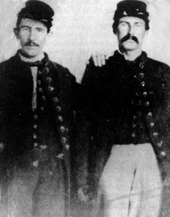

|

NAMES: Jesse Manson and Samuel Fair
BORN: Unknown
DIED: Unknown
ALLEGIANCE: Union
HIGHEST RANKS: Manson - Private, Fair - Corporal
UNIT: 121st Pennsylvania Volunteer Infantry
RECORD: Enlisted July 12, 1862, and mustered in at
Philadelphia in September; Manson hospitalized from May to
November 1863; Fair captured and paroled in the July 1863
Battle of Gettysburg, Pennsylvania; Fair promoted to
corporal, fall or winter of 1863; mustered out June 2, 1865,
at Washington, D.C.
|
|
It is not unusual to be mistaken for your best friend, nor
is it an insult. There is even something gratifying about
seeing that people perceive you and your friend as a unit.
So, perhaps Jesse Manson and Samuel Fair would not
mind that we no longer know who is who in the photograph
they posed for during their army days. They were certainly
best friends; their friendship stood the test, not only of
time, but of war.
Manson and Fair enlisted in the summer of 1862 in a unit
that became part of the 121st Pennsylvania Infantry, made up
of men from the Keystone State's Philadelphia and Venango
counties. Their names went on the rolls of Company A as they
mustered in and headed for Washington, D.C., where their
regiment would become part of the Army of the Potomac.
The Battle of Antietam in Maryland was over by the time the
121st Pennsylvania was ready for the field. For the first
couple months of army life, the greatest hardship Manson and
Fair faced was when Manson was convicted of unauthorized
foraging, and had to forfeit a month's pay--$13. But the
dark realities of soldiering caught up with the men on
December 13, 1862. That day, assigned to the 1st Brigade of
Major General George G. Meade's 3rd Division in the I Corps,
they engaged in savage fighting against the Confederate
right in the Battle of Fredericksburg, Virginia.
The next spring, as the army pursued its Chancellorsville
Campaign in Virginia, Manson took sick with either dysentery
or typhoid fever, and was sent to a Philadelphia hospital.
While Manson recuperated, Fair fought in the July 1863
Battle of Gettysburg, where he was listed as "killed in
action" but was actually captured and paroled. He spent five
weeks in a parole camp at West Chester, Pennsylvania, before
returning to duty. Still, Manson had not returned. Back in
Virginia that autumn, Fair was made a corporal, but Manson
was not there to see it. Finally, in November, the two
friends were reunited.
Manson and Fair spent the next year and a half helping to
corner the Confederate Army of Northern Virginia. Then,
their duty done, they mustered out together. Like their
friendship, they had survived the war.
Source: Civil War Times Illustrated
40:1 (March 2001), 80.
|